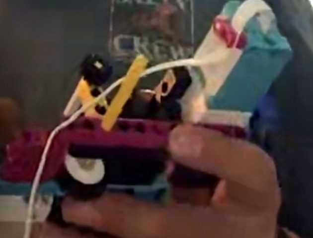

← HACK-LAB.SPACE
Mission 00
EN
DE
IT
A
A+
A++
rebrickable.com ↗
SPIKE Prime Plotter (XY) — mareklew
qikeasy.com ↗
SPIKE Prime XY Plotter with pen lift
education.lego.com ↗
Track Your Packages → Plotter
27 August 2026
